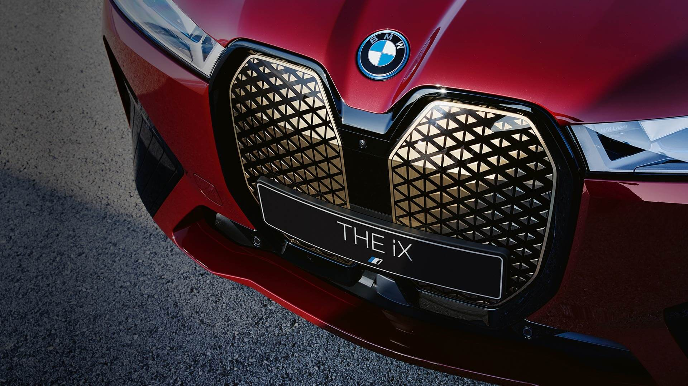
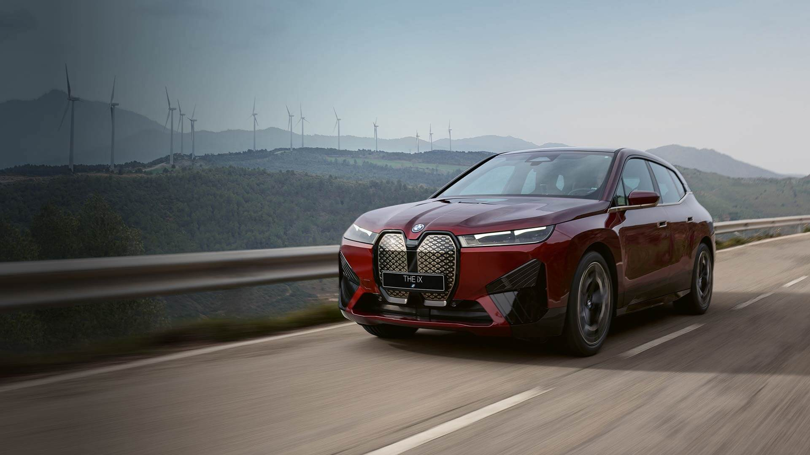
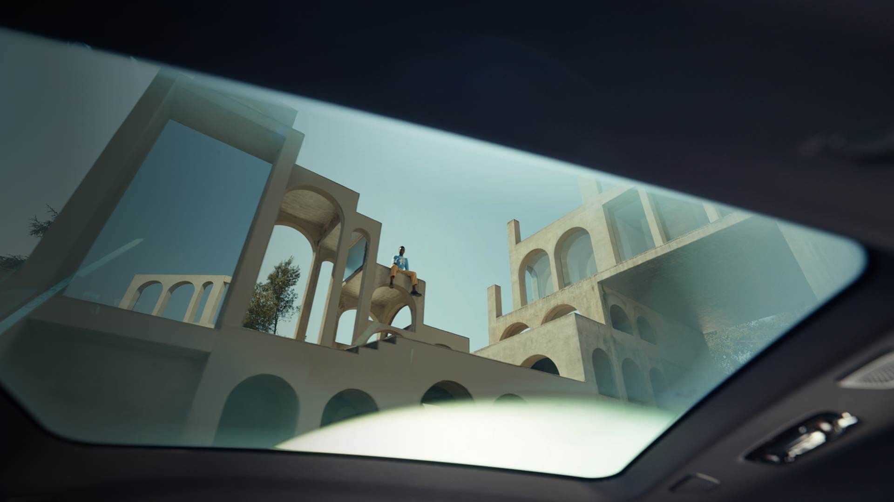
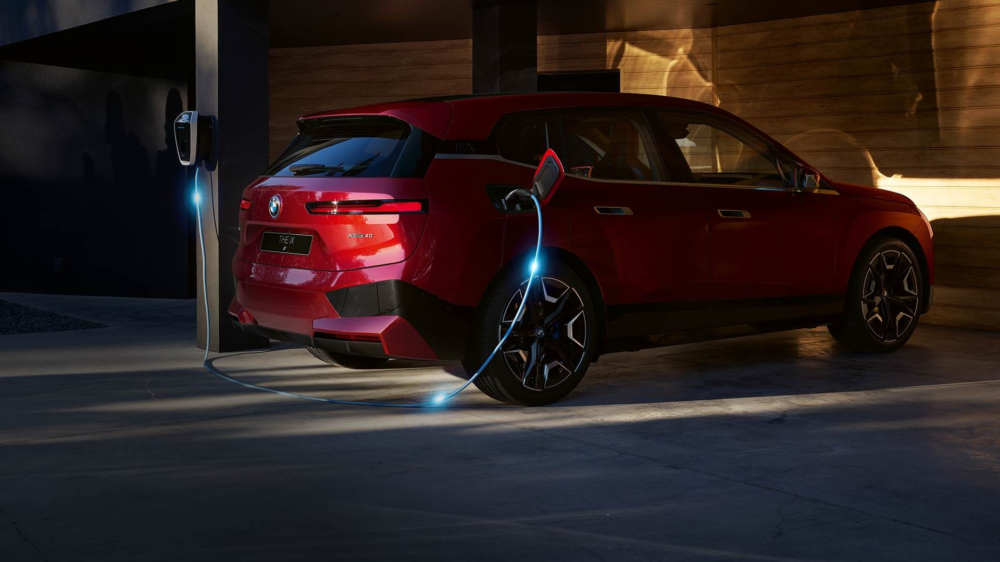

<!-- justpremium_format_template v1.2.0 2020-11-17 -->

<!DOCTYPE html>
<html>

<head>
    <meta charset="utf-8">
    <link rel="stylesheet" href="//cdn.justpremium.com/Justpremium/boilerplate/css/premium_2.0.css">
    <link rel="stylesheet" href="css/style.css?v=e">
</head>

<body id="body_expanded" data-name="left">
    <!-- START OF CUSTOM HTML -->
    <header>
      <div id="video-container" jp-createvideo-controls jp-createvideo-src="assets/video.mp4" jp-createvideo-poster="assets/poster.jpg"></div>
      
    </header>
    <footer>
      <div class="bmw_slider__container">
        <div class="slide slides1 slide1">
          
          <div class="slide__text">
            <h3>ГРИЛЛ НОВОГО BMW iX</h3>
            <p>ВЫПОЛНЕН ИЗ ИННОВАЦИОННОГО САМОЗАЖИВЛЯЮЩЕГОСЯ МАТЕРИАЛА, НА КОТОРОМ МЕЛКИЕ ЦАРАПИНЫ ЗАТЯГИВАЮТСЯ САМИ СОБОЙ.</p>
          </div>
        </div>
        <div class="slide slides1 slide2">
          
          <div class="slide__text">
            <h3>ЭЛЕКТРОДВИГАТЕЛЬ БЕСШУМЕН</h3>
            <p>И РАЗГОНЯЕТ НОВЫЙ BMW iX<br>ЗА 4.6 С. ДО 100 КМ/Ч.<br><br>УСЛЫШАТЬ НЕВОЗМОЖНО.<br>МОЖНО ТОЛЬКО ИСПЫТАТЬ.</p>
          </div>
        </div>
        <div class="slide slides1 slide3">
          
          <div class="slide__text">
            <h3>В ПАНОРАМНОЙ КРЫШЕ НОВОГО BMW iX</h3>
            <p>ИСПОЛЬЗУЮТСЯ КРИСТАЛЛЫ<br>С ЭЛЕКТРОХРОМНЫМ ЗАТЕМНЕНИЕМ,<br>КОТОРЫЕ ПОЗВОЛЯЮТ ЛЕГКО СДЕЛАТЬ КРЫШУ ПРОЗРАЧНОЙ И НАОБОРОТ.</p>
          </div>
        </div>
        <div class="slide slides1 slide4">
          
          <div class="slide__text">
            <h3>С BMW CHARGING<br>В ВАШЕМ РАСПОРЯЖЕНИИX</h3>
            <p>ВСЕГДА БУДЕТ ШИРОКИЙ РЯД РЕШЕНИЙ ДЛЯ ЗАРЯДКИ ВАШЕГО BMW IX ДОМА, В ПУТИ<br>И НА РАБОТЕ. ПЛЮС 100 КМ ПУТИ ЗА 6 МИНУТ ИЛИ ПОЛНАЯ ЗАРЯДКА МЕНЕЕ ЧЕМ ЗА 40 МИНУТ.</p>
          </div>
        </div>
      </div>
      
      
      <aside>Закрыть</aside>
    </footer>
    <!-- END OF CUSTOM HTML -->
</body>
  <script src="js/main.js"></script>
  <script src="//cdn.justpremium.com/Justpremium/boilerplate/js/jp-controls_0.6.0.js"></script>
  <script src="//cdn.justpremium.com/Justpremium/boilerplate/js/premium_2.4.3.js"></script>
</html>
